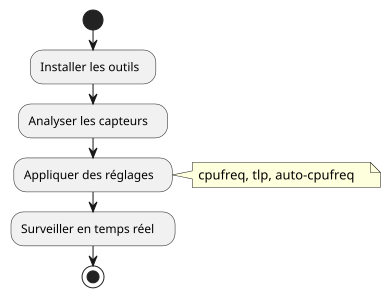
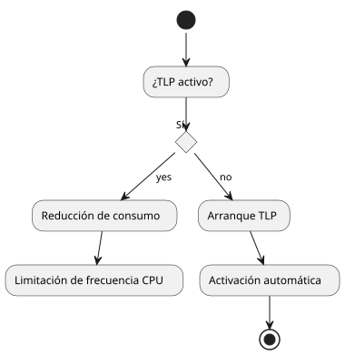

Enfriar y monitorear la temperatura de su portátil bajo Ubuntu
Publié le 15 July 2025
¿Siente que su portátil se calienta anormalmente bajo Ubuntu? Este artículo le propone un enfoquede softwarecompleta paraenfriar, vigilar et controlar la temperaturade su máquina.
Objetivo de esta guía
-
Reducir la temperatura global del ordenador
-
Optimizar la gestión de energía
-
Monitorear los componentes críticos (CPU, GPU, etc.)
-
Evitar los retrasos debidos alestrangulamiento térmico

Requisitos previos
-
Una máquina Ubuntu (20.04 o superior recomendada)
-
Conexión a Internet
-
Habilidad en línea de comandos (nivel principiante a intermedio)
Instalar y configurar las herramientas
lm-sensors` para detectar los sensores
sudo apt install lm-sensors
sudo sensors-detect
sensors|
Respondan`YES`a todas las preguntas de`sensors-detect`para detectar los módulos. |
tlp` : gestor de energía inteligente
sudo apt install tlp tlp-rdw
sudo systemctl enable tlp
sudo systemctl start tlp
cpufrequtils` : limitar las frecuencias de la CPU
sudo apt install cpufrequtils
cpufreq-info
sudo cpufreq-set -g powersave-
powersave: limita los picos de frecuencia -
performance: favorece la potencia a costa de la temperatura
auto-cpufreq` : gestión dinámica simplificada
git clone https://github.com/AdnanHodzic/auto-cpufreq.git
cd auto-cpufreq
sudo ./auto-cpufreq-installer
sudo auto-cpufreq --install
thermald` : protección térmica automática
sudo apt install thermald
sudo systemctl enable thermald
sudo systemctl start thermaldMonitoreo en tiempo real
sensors` en la línea de comandos
watch -n 2 sensorsOpción GUI : `psensor
sudo apt install psensorInterfaz gráfica simple para CPU, GPU, ventiladores.
Consejos adicionales
-
Cerrar las pestañas y aplicaciones pesadas (ej: navegadores)
-
Evitar el uso intensivo en batería
-
Monitorear los procesos vía`htop`:
sudo apt install htop
htopLimpiar el sistema para limitar las sobrecargas
sudo apt autoremove
sudo apt autoclean
sudo journalctl --vacuum-time=3dPara ir más lejos
Puede crear un servicio`systemd`personalizado para aplicar automáticamente algunos ajustes al arranque. ¿Quieres un ejemplo en un próximo artículo? ¡Hazmelo saber!
📚 Conclusión
Al combinar estas herramientas simples, ganarás :
-
Una temperatura CPU controlada
-
Menos ruido de ventilación
-
Una mayor autonomía
No olviden supervisar sus temperaturas regularmente para prevenir cualquier sobrecalentamiento.
_ Más vale prevenir que fundir su CPU. _